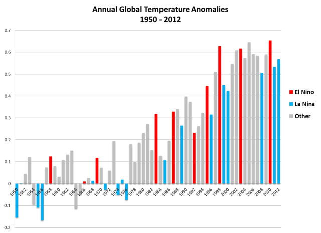

2012-02-08T08:01:54
Original: https://sujato.wordpress.com/2012/02/08/on-climate-change-and-dumbology/
My thanks to Bhante Brahmali who recommended that I read The Australian, apparently to moderate my excessively liberal views. I warned him that it was likely to have the opposite effect than desired, and alas I was proven correct.
Perusing our national broadsheet in the plane back from my recent trip to Perth (on which more when I get some time), I came across two articles on climate change, both skeptical (of course). One was so silly I immediately consigned it to the rubbish bin of my unconscious, in fear that it would infect my brain.
The other, in wonderfully serious tone, really looked as if it was making a serious ‘argument’. Global temperatures hit their peak in 1997, it said, and this is a fact of deep concern for proponents of the global warming ‘theory’. I was struck with existential doubt: perhaps my advocacy for, you know, using less and helping the environment, had been misguided all along!
In the real world, I was struck with an existential anxiety, a sort of fear mixed with pity mixed with horror, at the stupidity of the dialogue. Is it not completely obvious that if you compare things with the extreme peak, they will be less? How can it be that anyone takes this seriously? Fortunately, as a master of the erudite and complex research tools Google and Wikipedia, I accomplished a sophisticated study of the data (known among rocket scientists as a ‘google search’) and came up with the following graph:

The temperatures peaked in 97/98, but the temperatures overall in the last decade have been near this peak, making the decade clearly the warmest on record.
Why is it that such elementary knowledge is beyond us? A recent study has made a strong case that people who hold conservative social values are less intelligent and more fearful. (And, by the way, congratulations to the authors for increasing global intelligence by making their work freely available.) Cognitive ability is linked with compassion, allowing one to empathize and imagine the suffering of others.
This has been covered in the Daily Mail, which as Charlie Brooker points out, is a wonderful piece of irony.
George Monbiot‘s more sober analysis raises the important point that liberals have been too polite in allowing the ultra-conservative viewpoint to steamroller reason. Did I hear someone say, ‘Bhikkhuni ordination will never be accepted by any Theravadin monks!’ Sometimes reason has to stand up for itself.